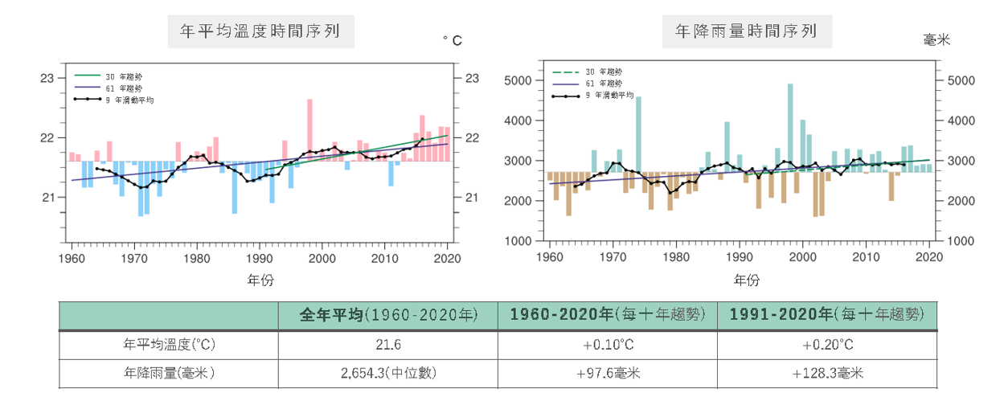
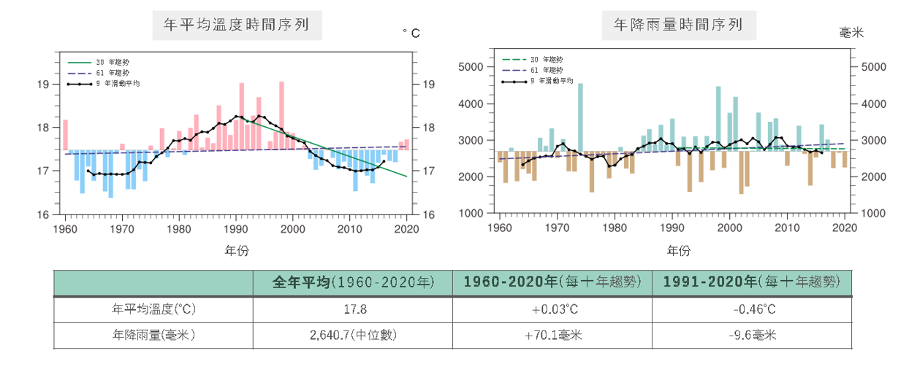
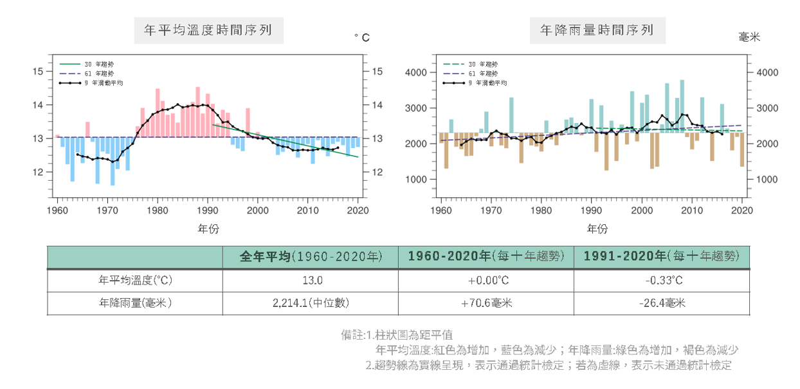

過去氣候變化
聚焦 1960–2020 年溫度與降雨的變化概況（平地／山區／高山分區）。
1960–2020 年
宜蘭縣年平均溫度為 18.3°C；年降雨量平均為 2,597.8 毫米（中位數）。
• 1960–2020 年：年平均溫度每十年增加 0.05°C，年降雨量增加 81.0 毫米
• 1991–2020 年：年平均溫度每十年減少 0.18°C，年降雨量增加 41.5 毫米
平地（海拔 500 公尺以下）

平地區域之溫度與降雨變化分布
山區（海拔 500–1,500 公尺）

山區區域之溫度與降雨變化分布
高山區（海拔 1,500 公尺以上）

高山區域之溫度與降雨變化分布
資料來源：『縣市氣候變遷概述 2024』，國科會「臺灣氣候變遷推估資訊與調適知識平台計畫（TCCIP）」。